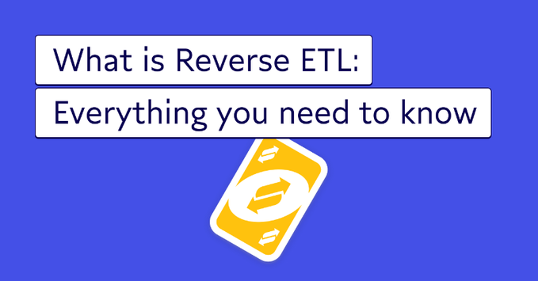

In short, Reverse ETL is the difference between making decisions based on your data and finally being able to take action to realize your data dreams.
Let's dive in?👇

2
5
12
Uncle Bob Martin@unclebobmartin 20 min
The big lie is that making messes allows you to go faster — at first.
No. Messes slow you down at the very start, and the impediment will simply increase without bound until you clean them.
Ask me how I know.
2
5
12
NordVPN@NordVPN
Plus besoin de choisir entre vitesse et sécurité : NordVPN vous offre les deux. Naviguez en ligne en toute sécurité à la vitesse de la lumière : https://content.nordvpn.com/3ETDv8Q